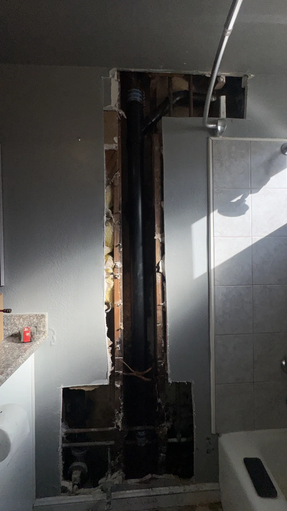

Showers & Fixtures
Yesterday the shower felt normal. Today the stream barely reaches you. A sudden change is worth paying attention to, but it does not automatically mean the whole house needs new pipes. Start by finding out how far the problem extends.
Read the guide Water Heaters
A water heater can make sounds during normal operation, so one new noise is not enough to decide that it needs replacing. Still, a repeated popping or rumbling sound is worth investigating. The timing of the noise and any changes in hot water are more useful than guessing from the sound alone.
Read the guide Drains & Pipework
You clean the stopper, the water drains for a while and then the basin starts filling again. That pattern usually means the first cleaning did not address the entire cause. A recurring clog deserves a closer look at where the restriction is and how the drain behaves.
Read the guide Showers & Fixtures
A faucet that drips all night is frustrating, especially when you have already tightened the handle. More force is rarely the useful next step. First identify where the water appears and whether the faucet is fully off. Different leak locations point to different parts.
Read the guide Bathroom Updates
You may like the bathroom’s layout and tile but want a different showerhead or a handle that works better. A full remodel is not automatically necessary. The useful question is which parts are being changed and whether the existing plumbing can support them.
Read the guide Planning a Visit
You do not have to diagnose the plumbing before asking for help. A few practical details can make the first conversation easier and help you avoid an unnecessary trip to buy the wrong part. Start with the symptoms and the location, then add what you know about the fixture.
Read the guide Everyday Repairs
A toilet normally refills after a flush, then becomes quiet. If water keeps moving, or the tank refills again when nobody has flushed, something may not be sealing or shutting off correctly. Notice whether it runs continuously or restarts at intervals.
Read the guide Planning & Costs
A shower valve estimate can be confusing because “replace the valve” may describe very different jobs. One request involves a serviceable cartridge; another involves opening a wall and changing the valve body. Comparing prices without comparing those scopes can be misleading.
Read the guide Water Heaters
A shower turns cold sooner than it used to, and the next person has to wait. Before assuming the heater is too small, compare the current routine with what used to work. A change in demand and a change in equipment performance can feel similar from inside the shower.
Read the guide Water Heaters
Age is a useful detail, but it is not the whole decision. An older heater with a serviceable component problem is different from a unit with a failing tank. A sensible comparison begins with the actual fault, the installation and the household’s hot-water needs.
Read the guide Drains & Pipework
A bathroom odor can have several sources, so start by noticing where and when it is strongest. A smell near a rarely used drain is different from an odor that returns every time the toilet is flushed. Avoid masking it and assuming the cause has gone away.
Read the guide Everyday Repairs
Finding a wet cabinet can be alarming, especially when you cannot see a steady drip. Water may appear only when the faucet runs, when the basin drains or when an appliance operates. First limit further water safely, then gather details without taking the connections apart.
Read the guide